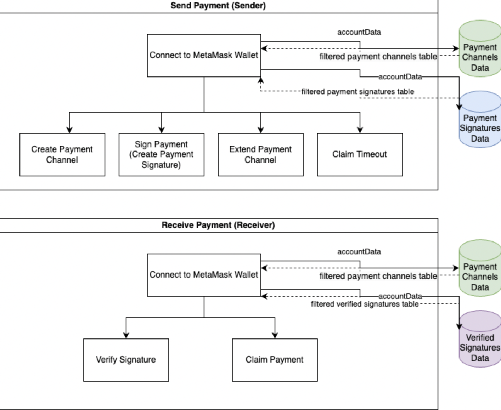
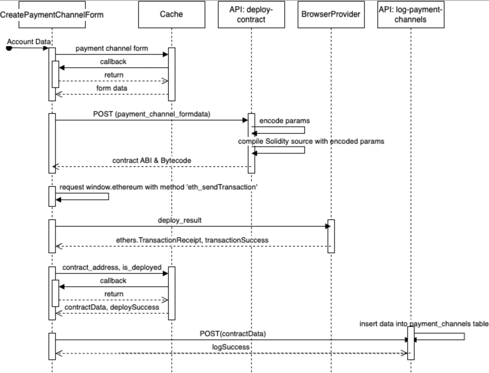
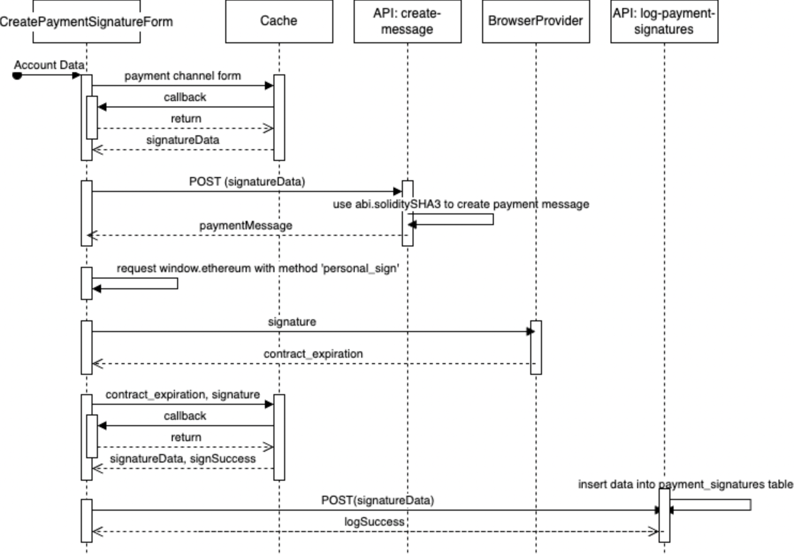
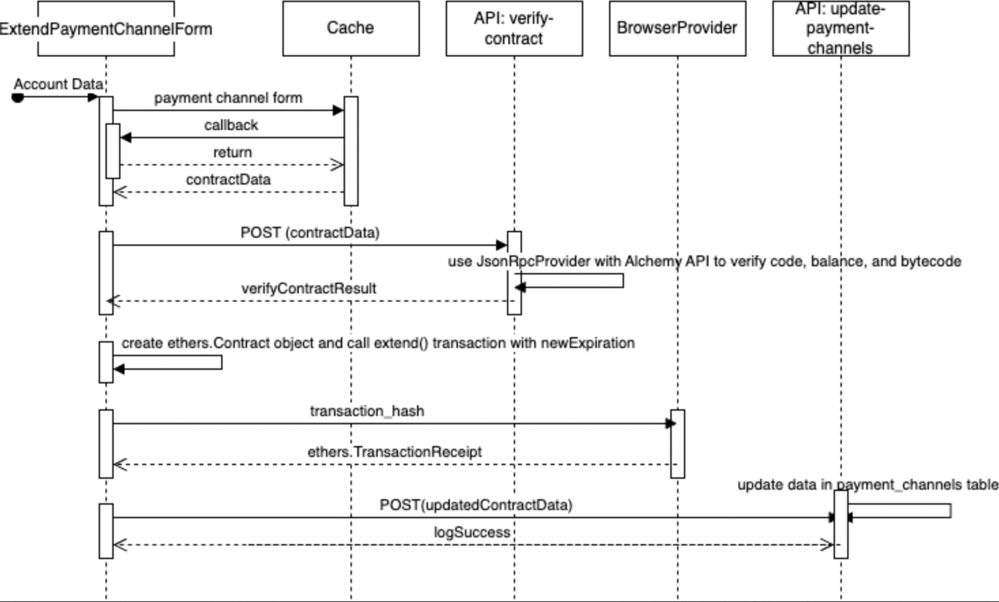
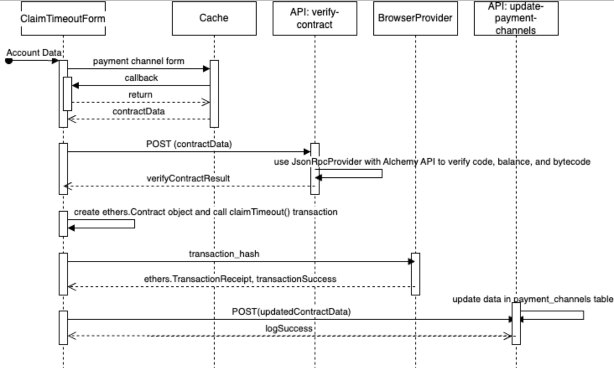

EtherFlow is a decentralized payment channel built on the Ethereum platform with its smart contract technology that connects senders and receivers directly, facilitating efficiency and transparency, with low transaction fees.
Payment methods have been traditionally provided by centralized companies. However, cryptocurrencies have opened opportunities for decentralized finance. However, one of the main drawbacks of sending payments with cryptocurrencies are transaction fees. With traditional payment methods, transaction fees are rarely required. However, with cryptocurrencies, transaction fees are always required from the sender. As adoption of cryptocurrencies grows, the need to minimize transaction fees is important for both the user experience and adoption rates. One solution is to create a payment channel, which will allow a sender to make continuous payments to a reciever within a predefined time period but only requiring a single transaction fee from both parties: one for opening the payment channel by the sender and another for closing the payment channel by the reciever. Current approaches to this framework requires at least five seperate applications to work, one of which requires some programming knowledge. The complexity of setting up this framework not only overcomplicates the process but also creates a steep learning curve to use such a framework. In this project, we condense four of the five applications required to create a payment channel into a single decentralized application, which minimizes the number of applications required to only two and also heavily reduces the learning curve to use such a framework.
Monetary transactions have been traditionally governed by centralized financial entities such as banks, which are:
To solve the problems that centralized payment channels have, we introduce EtherFlow, which utilizes the following technologies:





EtherFlow represents a significant step forward in addressing efficiency, transparency, privacy, and high transaction fees with user-friendly interfaces. However, for EtherFlow to remain relevant and continuously serve the needs of its users, several areas of future improvement and expansion can be considered: Multi-currency and Cross-chain Functionality, User Education and Onboarding, Interoperability with Traditional Finance, Regulatory Compliance and Security Enhancements, and etc.